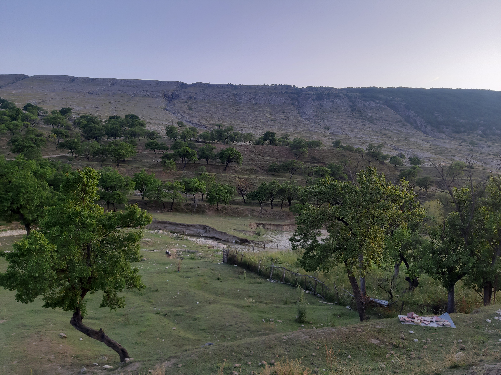

Италия
Мне очень понравилась Италия! Эта страна просто восхитительна своей красотой и уникальным колоритом. В Италии каждый город и даже каждый район имеет свой неповторимый стиль и атмосферу.
Рим, Флоренция, Венеция, Неаполь... Каждый из этих городов обладает своими уникальными достопримечательностями, архитектурой и культурой. В Риме я восхищалась Колизеем, Фонтаном Треви и Ватиканом. В Флоренции меня поразили собор Санта-Мария-дель-Фьоре и галерея Уффици. А Венеция просто очаровала своими каналами, мостами и романтической атмосферой.
Кроме того, в Италии я попробовала множество блюд национальной кухни, которые оказались просто великолепными. Пицца, паста, лазанья, ризотто - все было так вкусно и ароматно!
Но самое главное - это люди. Итальянцы очень гостеприимные и дружелюбные люди. Они всегда готовы помочь и подсказать, как добраться до нужного места или что посмотреть в городе.
Итак, Италия - это прекрасная страна, которая покорила мое сердце своей красотой, культурой и гостеприимством. Я обязательно вернусь туда еще раз, чтобы насладиться этой удивительной атмосферой снова и снова!
